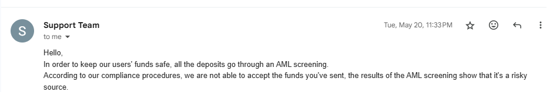
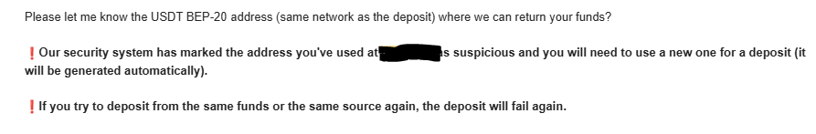
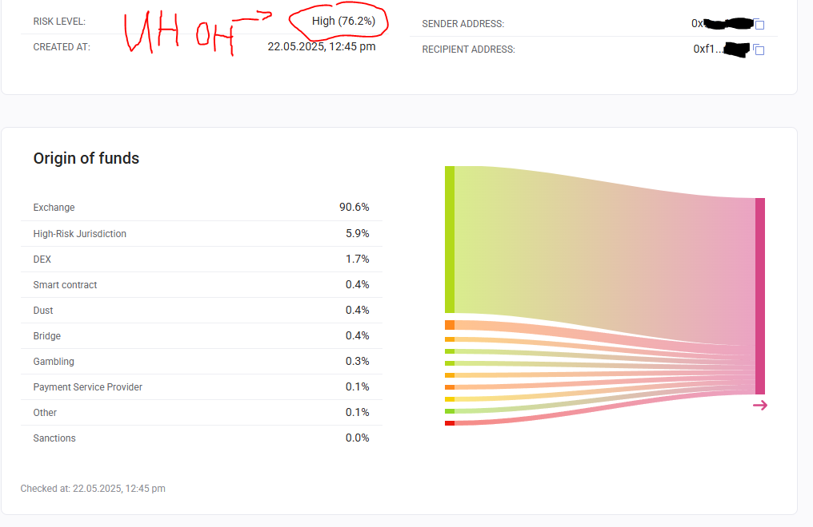
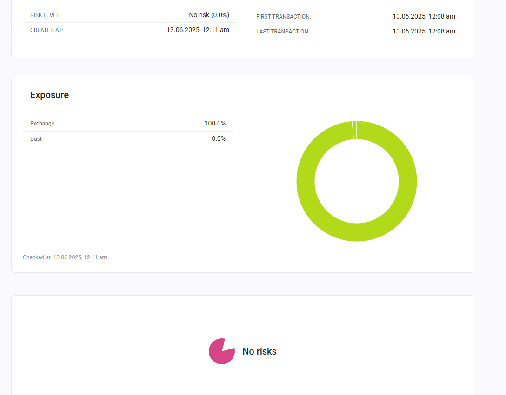

LAUNDERING CRYPTO IS A JOKE. SO I'LL TEACH YOU IN 5 MINUTES.
CRYPTOCURRENCY
5 min read (duh)

Support telling me that my deposit failed AML screening
So it started when my coins -- which i've had for years -- were flagged for Money Laundering (i'm totally still not salty). That is insane. Would I ever launder money? Don't answer that question.

Support offering to refund my coins
Luckily for me, this website loves money launderers and gave me an oppurtunity to recieve my coins back.
However, that begs the question, what do I do with "tainted" coins??
...
That's right, launder them!!
STEP 1: Are your coins hella wack?
Well, if my coins magically became linked to Bulgerian crime rings, I'm sure you might want to make sure your coins aren't linked to CP trade.
There are lots of AML check services out there, but the best one I've found is BitOk (https://bitok.org) since it's you get a couple of checks for free, and its like ten cents per check

76.2% Risk Score 😭😭😭 Aw hell naw
Soooo yeah I guess if a measily 6% of my token value is "High Risk Jurisdiction" (Whatever that means) then my coins are cooked.
Well, I know my coins are tainted... so what do I do about it?
STEP 2: Welcome to Monero
Ugh, laundering coins is literally impossible because Every. Single. Transaction. is public on the blockchain...
...so that got engineers around the world to solve the million dollar problem -- "laundering crypto is too hard 😢"
So of course they made a new coin, Monero, that is pretty much impossible to track on the blockchain! How does it work? idk ill have chat gpt explain:
ChatGPT said:
Monero (XMR) is a privacy-focused cryptocurrency that aims to make transactions anonymous and untraceable, unlike Bitcoin and many other cryptocurrencies, which are pseudonymous (publicly viewable but tied to addresses).
Here’s a breakdown of how Monero works:
🔒 1. Privacy Technologies in Monero
✅ Ring Signatures
When you send Monero, your wallet uses ring signatures to mix your transaction with others. This makes it unclear which participant actually signed the transaction, hiding the sender.
Example: If you send XMR, the blockchain shows a group of possible senders, not just you.
✅ Stealth Addresses
Each time you receive Monero, your wallet generates a one-time stealth address for that transaction, even if someone sends money to your public address.
This hides the receiver on the blockchain — only the sender and receiver know who was involved.
✅ RingCT (Ring Confidential Transactions)
This feature hides the transaction amount using cryptographic proofs.
Nobody can see how much XMR was sent — even though the transaction is validated.
🧾 2. Blockchain Differences from Bitcoin
Monero uses a different blockchain than Bitcoin, with privacy-by-default (not optional).
It’s based on the CryptoNote protocol, not Bitcoin’s code.
Monero's blockchain doesn’t show addresses, amounts, or sources of funds.
🔁 3. How Transactions Work (Simplified)
You create a transaction to send XMR to someone’s address.
Your wallet:
Generates a stealth address for the recipient.
Obscures the amount using RingCT.
Hides the sender using ring signatures.
The network verifies the transaction using cryptographic proofs — without knowing sender, recipient, or amount.
The recipient scans the blockchain with their private view key to detect incoming funds.
🛠 4. Mining & Supply
Monero is mined via Proof of Work, like Bitcoin.
Uses the RandomX algorithm — CPU-friendly to avoid mining centralization.
Has tail emission: after the main supply is exhausted (~18.4M XMR), 0.6 XMR/min will be emitted forever to incentivize miners and secure the network.
🔐 5. Wallets and Keys
Monero wallets have:
Public address (shared to receive funds)
Private view key (used to scan for incoming transactions)
Private spend key (used to send funds)
Only someone with both private keys can control the funds.
🌐 6. Use Cases
Private purchases (especially online)
Financial privacy in oppressive regimes
Avoiding blockchain analysis or surveillance
⚠️ Downsides / Controversy
Harder to audit or trace (used in some darknet markets)
Larger transaction sizes (because of privacy features)
Some exchanges delist Monero due to regulatory pressure
Blah blah blah transactions are mixed using ring signatures bla bla bla.
That means that if you recieve Monero, let it sit for a little bit and maybe transfer it to different addresses you own, the traces of your Monero will vanish -- like a morning mist beneath the glory of the sun. (Rain World?)
Hell, I was a lazy bum and i just waited like 30 minutes without doing allat and it still cleared my AML score.
Make sure your wallet supports Monero. you can download the official GUI wallet, or use Feather.
STEP 3: Swapping your coins to Monero
Now this is the hardest part -- lots of the popular US exchanges don't allow you to withdraw Monero because they are "afraid of money laundering" (pussies)...
... so just don't use an U.S. exchange.
There are lots of options to find no-KYC exchange sites that will swap your coins for Monero. Which one you pick depends on where your coins came from.
If you're pretty confident you aren't a human sex trafficker and your coins are not sanctioned, I'd reccomend FixedFloat (https://ff.io). They do not require KYC (if your coins are relatively safe) and have the cheapest fees at 0.5%.
Now.... Maybe you aren't the saint you portray yourself as and your coins are ... from a Taliban hit payment. Then, i'd reccomend MajesticBank (https://majesticbank.sc). If you don't want to use MajesticBank, download Tor Browser and go on the dread forums and find a different exchange. I won't link any since it will only take like 10 minutes for your money laundering ass 😭🙏
you on majestic bank 😭😭😭
(btw the way all of these exchanges are under my referral.)
Other Exchanges at orangefren.com. just in case you need more options. maybe the guys who pay you for trafficking orphans pay in $TRUMP. better find an exchange that accepts that
i mean you can just like swap it around between multiple wallets after waiting like 2 days. monero transaction fees are only like one cent so it wont be that bad
thats it really
thank the engineers for making laundering money easy ♥
STEP 5: Turning Monero to real people money
Your Monero should be squeaky clean now! Just use FixedFloat (https://ff.io) to turn it back to the crypto that you want.
You could also use MajesticBank to do that. but like. if you put in cp money. youre gonna get back cp money. so that probably isnt too smart
STEP 6: Enjoy your clean funds and keep commiting crimes 💪

Yippee!! 0% Risk
Boom, your money is clean as if you were a functioning person in society!!
You should be safe to turn this money into fiat by depositing it into exchanges probably
Wow this guide was quick i might have to change it to 4 minutes
Oh yeah I forgot, by reading this you swear to the terms and conditions that you pinky promise that you won't use my guide to launder money. and also that you will give me ten thousand dollars. thx (monero) 48taRG2Fh8TYCn1Mf2eyWX8MLJhGt3nxW8bhKtqsy4hKQXq6VCUqhZ9ETbbZTyGvX1f9ehrcPRrVLH8p693Kdn3eN4zVdTe
happy moneroing
-uiGalaxy
You are visitor #Loading (I like eevees)! What's up?